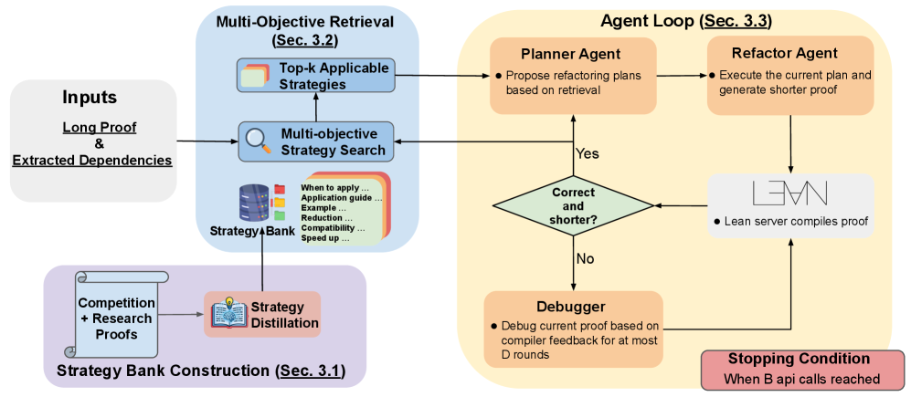
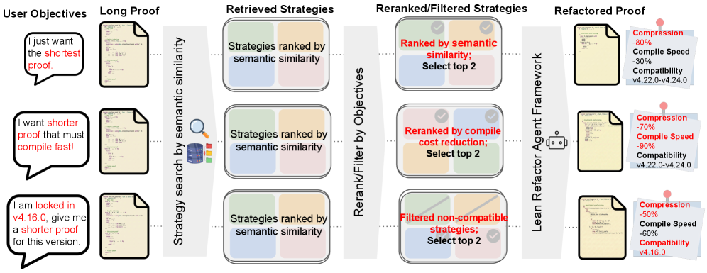

Presents Lean Refactor, a retrieval-augmented agentic framework for multi-objective refactoring of Lean/Mathlib proofs.
Abstract
We present Lean Refactor, a plug-and-play retrieval-augmented agentic framework for multi-objective, controllable, and version-robust refactoring of Lean proofs. LLM-generated proofs are notoriously correct-but-verbose and brittle across library versions, yet existing refactoring works overlook three practical challenges: 1) Lean refactoring is natively multi-objective (proof length, compilation cost, and version compatibility are often in tension); 2) Lean repositories have fragile compatibility, whereas LLM releases are unaware of Lean/Mathlib versions; 3) Training-based pipelines require repeated fine-tuning with each new LLM release, scaling neither with model churn nor with Lean's release cycle. Lean Refactor steers a frozen agentic LLM with retrievals from a curated database of multi-objective refactoring strategies, each densely annotated with metadata such as supported Lean/Mathlib versions and expected compilation-cost reduction. Experiments show over $70\%$ token-level compression on competition benchmarks, over $20\%$ on research repositories, and up to $60\%$ compilation-time reduction, outperforming prior work and Claude Code. Version-filtered retrieval further improves compression on the target Lean version, and refactored miniF2F proofs exhibit stronger zero-shot version transfer to future Lean releases than their unrefactored counterparts.
Problem
LLM-generated Lean proofs are correct but verbose and brittle across Lean/Mathlib versions. Existing refactoring methods address only a single objective, require retraining with each new LLM or Lean release, and ignore the misalignment between LLM knowledge cutoffs and the Lean toolchain.
Approach
Lean Refactor is a retrieval-augmented agentic framework that steers a frozen LLM with strategies from a curated database annotated with Lean/Mathlib version compatibility and expected compilation-cost reduction. A trained retrieval model maps target proofs to relevant strategies, with multi-objective reranking for proof length, compilation cost, or version filtering. The agent loop (planner, refactorer, debugger) works with any frozen frontier LLM without retraining.

Figure 4 : Overview of Lean Refactor framework. 1. We first summarize raw long-short proof pairs sourced from diverse Lean code sources into well-structured reusable strategies, and more importantly, we annotate each strategy with code refactoring metadata, including compilation time cost and version compatibility (Section 3.1 ). 2. We then train a strategy retrieval model that maps Lean code (tha

Figure 5 : Multi-objective Lean proof refactoring. A single strategy bank adapts to diverse user objectives at inference without retraining. Top: for shortest proofs, top- K strategies by cosine similarity are used directly. Middle: to balance faster compilation, candidates are reranked by annotated compile-cost reduction. Bottom: for a target toolchain (e.g., v4.16.0), incompatible strategies are
Results
Lean Refactor achieves over 70% token-level compression on competition benchmarks (miniF2F), over 20% on research repositories, and up to 60% compilation-time reduction. On PutnamBench it reaches 70.38% compression versus 57.20% for the prior ProofOptimizer. Version-filtered retrieval improves compression on target Lean versions, and refactored proofs show stronger zero-shot transfer to future Lean releases.
Method
miniF2F
PutnamBench
Putnam 2025
ProofOptimizer
87.90
57.20
--
Lean Refactor
88.40
70.38
79.27
Base Agent
79.75
41.15
68.18
Proof length compression (%) on competition and research benchmarks